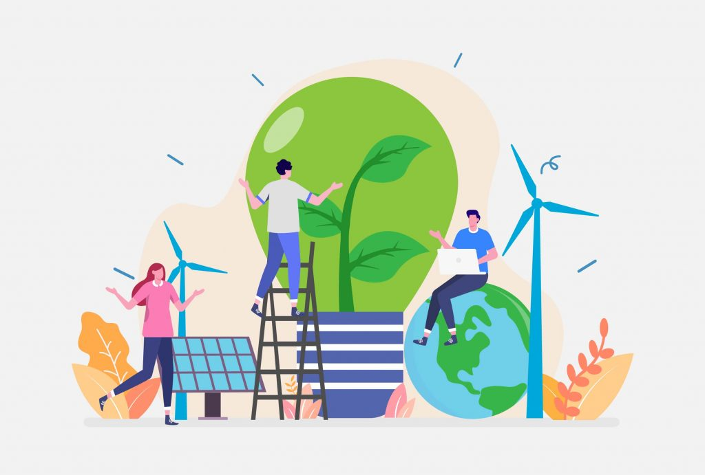

SOLUÇÕES AMBIENTAIS PARA O SEU NEGÓCIO
Possibilitamos o desenvolvimento sustentável do seu negócio
Em um mundo em constante movimento, nascemos com o propósito de contribuir para o desenvolvimento sustentável do planeta.
Com nossa expertise técnica oferecemos soluções para que as empresas possam crescer e se desenvolver em harmonia com o meio ambiente.

NOSSOS SERVIÇOS
Licenciamento ambiental
Fazemos todo o processo de licenciamento ambiental, desde a fase de planejamento de um empreendimento até a expedição das licenças.
Estudos ambientais
Elaboramos estudos ambientais de acordo com o porte, localização e fase de licenciamento ambiental do empreendimento, obra ou atividade.
Monitoramento ambiental
Realizamos o monitoramento ambiental através da coleta de dados, estudo e acompanhamento contínuo e sistemático das variáveis ambientais que exerçam influência sobre o meio.